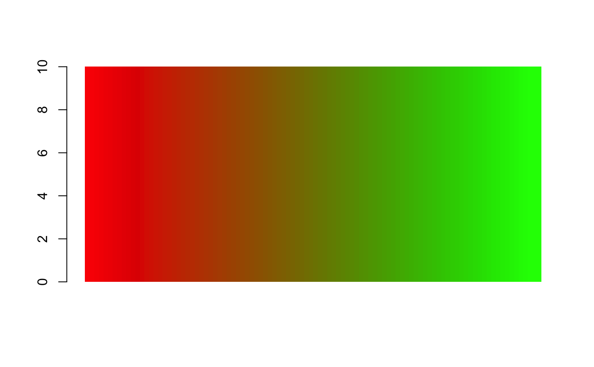
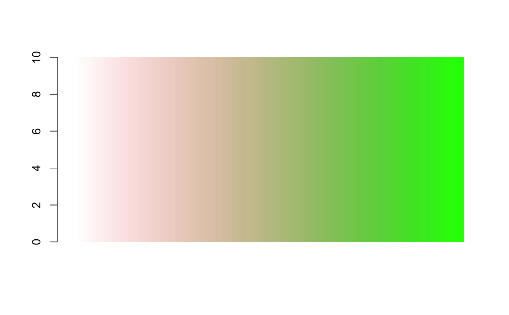

Colour Values
colour_values.Rdmaps colours to values
colour_values(x, palette = "viridis", na_colour = "#808080FF", alpha = 255, include_alpha = TRUE, ...) color_values(x, palette = "viridis", na_colour = "#808080FF", alpha = 255, include_alpha = TRUE, ...) # S3 method for character colour_values_to_hex(x, palette, na_colour, alpha, include_alpha, summary = FALSE) # S3 method for default colour_values_to_hex(x, palette, na_colour, alpha, include_alpha, n_summaries = 0, format = TRUE, digits = 2) # S3 method for logical colour_values_to_hex(x, palette, na_colour, alpha, include_alpha, summary = FALSE) # S3 method for factor colour_values_to_hex(x, palette, na_colour, alpha, include_alpha, summary = FALSE) # S3 method for Date colour_values_to_hex(x, palette, na_colour, alpha, include_alpha, n_summaries = 0, format = TRUE) # S3 method for POSIXct colour_values_to_hex(x, palette, na_colour, alpha, include_alpha, n_summaries = 0, format = TRUE) # S3 method for POSIXlt colour_values_to_hex(x, palette, na_colour, alpha, include_alpha, n_summaries = 0, format = TRUE)
Arguments
| x | vector of values to map to a colour |
|---|---|
| palette | colour palette. See details and examples |
| na_colour | hex string colour to use for NA values in the form |
| alpha | optional. Single value in [0,255] applied to all colours,
or a decimal in [0, 1) (to indicate a percentage, noting 1 is excluded),
or a vector of numeric values the same length as |
| include_alpha | logical indicating if the returned hex or matrix should include
the alpha values. Defaults to |
| ... | other arguments possed to methods |
| summary | logical indicating if a summary of the colours should be returned as
well as the full colour mapping. This will be the unique elements of |
| n_summaries | positive integer. If supplied a summary colour palette will be returned
in a list, containing |
| format | logical indicating if the summary values should be formatted. See details |
| digits | Integer. When summarising a numeric vector you can specify the number of decimal places to include in the summary values |
Details
The palette can either be
String - use
colour_palettes()to view available palettesMatrix - At least 5 rows, and 3 (or 4) columns representing the red, green and blue (and alpha) values
The matrix palette requires 5 rows because the colours are interpolated using a
cubic b-spline. This method requires 5 values.
when summary = TRUE, the following rules are applied to the summary values
logical vectors are converted to "TRUE" or "FALSE" strings
all other types remain as-is, unless
format = Tis used
when format = TRUE,
numbers are converted to strings with the specified number of decimal places (using
digitsargument)Dates are formatted as "yyyy-mm-dd"
See also
colour_values_rgb
Examples
## in-built palettes colour_values(x = 1:5) ## default is "viridis"#> [1] "#440154FF" "#3B528BFF" "#21908CFF" "#5DC963FF" "#FDE725FF"colour_values(x = 1:5, palette = "inferno")#> [1] "#000004FF" "#57106DFF" "#BB3755FF" "#F98D0AFF" "#FCFFA4FF"colour_values(x = 1:5, palette = "plasma")#> [1] "#0D0887FF" "#7E03A8FF" "#CB4778FF" "#F89441FF" "#F0F921FF"colour_values(x = 1:5, palette = "magma")#> [1] "#000004FF" "#50127CFF" "#B63779FF" "#FB8761FF" "#FCFDBFFF"colour_values(x = 1:5, palette = "cividis")#> [1] "#00204DFF" "#414D6BFF" "#7C7B78FF" "#BDAF6FFF" "#FFEA46FF"colour_values(x = 1:5, palette = "rainbow")#> [1] "#FF0000FF" "#81FF00FF" "#00FFFCFF" "#7C00FFFF" "#FF0006FF"## matrix palette n <- 100 m <- grDevices::colorRamp(c("red", "green"))( (1:n)/n ) df <- data.frame(a = 10, x = 1:n) df$col <- colour_values(df$x, palette = m) barplot(height = df$a, col = df$col, border = NA, space = 0)## with an alpha column on the palette n <- 100 m <- grDevices::colorRamp(c("red", "green"))( (1:n)/n ) m <- cbind(m, seq(0, 255, length.out = 100)) df <- data.frame(a = 10, x = 1:n) df$col <- colour_values(df$x, palette = m) barplot(height = df$a, col = df$col, border = NA, space = 0)## single alpha value for all colours df <- data.frame(a = 10, x = 1:255) df$col <- colour_values(df$x, alpha = 50) barplot(height = df$a, col = df$col, border = NA, space = 0)## vector of alpha values df <- data.frame(a = 10, x = 1:300, y = rep(c(1:50, 50:1), 3) ) df$col <- colour_values(df$x, alpha = df$y) barplot(height = df$a, col = df$col, border = NA, space = 0)## returning a summary palette colour_values(-10:10, n_summaries = 5)#> $colours #> [1] "#440154FF" "#481466FF" "#482575FF" "#463480FF" "#414487FF" "#3B528BFF" #> [7] "#345F8DFF" "#2F6C8EFF" "#2A788EFF" "#25848EFF" "#21908CFF" "#1E9C89FF" #> [13] "#22A884FF" "#2FB47CFF" "#43BF71FF" "#5DC963FF" "#7AD151FF" "#9AD93DFF" #> [19] "#BCDF27FF" "#DDE318FF" "#FDE725FF" #> #> $summary_values #> [1] "-10.00" "-5.00" "0.00" "5.00" "10.00" #> #> $summary_colours #> [1] "#440154FF" "#3B528BFF" "#21908CFF" "#5DC963FF" "#FDE725FF" #>